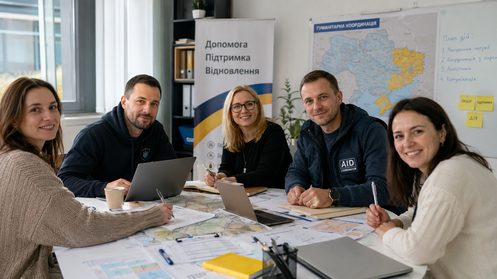

Сайт фонду готується до запуску
У цьому розділі будуть новини, партнерства та результати проєктів.
Читати →Об’єднуємо українські громади, бізнес, громадські організації та міжнародних партнерів для реалізації гуманітарних, соціальних і розвиткових проєктів.
Об’єднувати людей, організації та міжнародних партнерів навколо проєктів, які допомагають Україні сьогодні та створюють основу для її майбутнього розвитку.
Фонд відкритого співробітництва заснований у 2024 році для реалізації гуманітарних, соціальних та міжнародних проєктів підтримки України.
З перших днів фонд допомагає силам оборони, медичним закладам та територіальним громадам. Сьогодні ми формуємо платформу міжнародного співробітництва для довгострокового розвитку України.
Докладніше про фонд →
Підтримка сил оборони та безпеки громад.
Допомога медичним закладам і програмам відновлення.
Соціальна інфраструктура, розвиток і нові можливості для громад.
Партнерства між Україною та міжнародними організаціями.
Зелене відновлення, довкілля та європейські практики.
На головній сторінці розміщуємо всі ключові реквізити та способи підтримки — без окремої сторінки «Як допомогти».
Отримувач: БО «Фонд відкритого співробітництва»
ЄДРПОУ: 45794201
IBAN: [додати банківський рахунок]
Банк: [додати банк]
Призначення платежу: Благодійна допомога
У цьому розділі будуть новини, партнерства та результати проєктів.
Читати →Матеріали про міжнародні ініціативи фонду.
Оновлення про реалізацію програм фонду.
Партнер фонду у проєктах співробітництва, розвитку громад та сталого розвитку.
Партнери фонду →